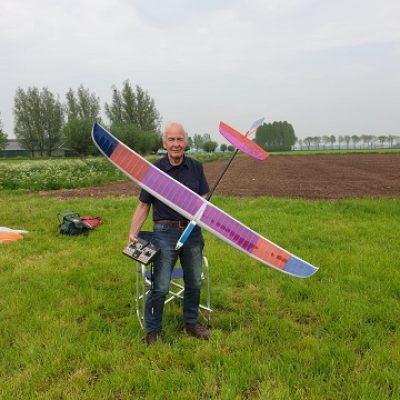
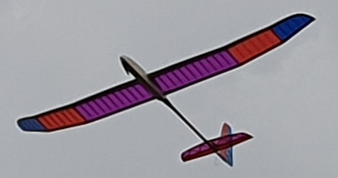
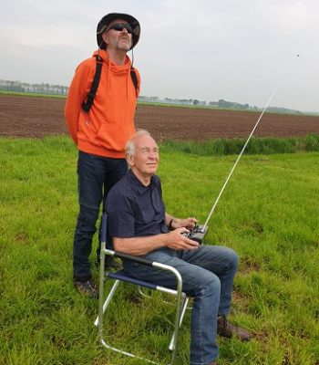

Geïnspireerd door de NK RES-wedstrijd van zaterdag 6 mei op ons veld in Duiven besloten Hans en ik bij goed weer de maandag daarna te gaan vliegen. We waren er om 13.00 uur, weinig wind op het veld, maar wel wat gespetter en onweersdreiging vanuit het zuiden. Richard was er een halfuurtje later ook. Voor mij betekende dat voor het eerst sinds lange tijd weer vliegen en het uit de kast halen van een aantal niet en half afgestelde modellen van het afgelopen bouw- en renovatie seizoen.
Mijn Californian 2,8 m uit 1986 heeft al een lange vlieghistorie als zwever achter de rug, maar is 2 jaar geleden omgebouwd naar electro-zwever, nu voorzien van spoilers in de vleugels en de romp is opnieuw bekleed. Deze kist had vorig jaar al een keer gevlogen met motor zonder remfunctie, die er dus deze winter maar in geprogrammeerd is. Deze kist was als eerste aan de beurt om uit te testen en het resultaat was OK: mooi langzaam vliegbeeld, prima motorstop en een klein beetje ‘up’ bij het gebruik van de spoilers.


Vervolgens een paar proefstartjes met de hand gemaakt met de MINI CX RES van Aviationtoys, maar die komt met zijn 155 gram ws. beter tot zijn recht aan de bungeelijn met een goed soepel elastiek waar ik nog naar op zoek ben (inmiddels wel wat F1B Wakefield rubber gevonden, maar nog niet getest). Moet dus maar even wachten, maar gaat mee op vakantie….
Toen een van een nieuwe romp voorziene zwever van zoon Ivo gehandstart: helaas te weinig wind en tijd voor het uitrollen van de lange startlijn, maar een paar handstartjes gaven een goede indicatie van de eigenschappen van deze forse 2,4 m zwever. De kist is wat sneller geworden door het aanzienlijk verminderen van het instelhoek verschil, en een klein beetje ‘up’ bleek toch nodig. We hebben besloten dat er maar permanent in te bouwen met 1 mm triplex plaatje onder de achterzijde van het stabilo. Volgende keer verder.
Toen kwam het grootste vraagteken… Ik heb vorig jaar een paar prachtige fabrieksvleugels van een ex-ALC lid gekregen (ca 1,8m) en vond het zonde deze ongebruikt in de kast te laten liggen. Ik had nog een mooie zwart gespoten glasvezel romppook voor een reserve F!Q model liggen, en een tekening met stabilo en kielvlak van de Purito 2m RES-zwever. Rompvoorstuk bedacht en ontworpen voor 2 servo’s naast elkaar onder de vleugel, electromotor 30 mm dia in de neus. De hardware is door Hans geleverd vanuit de clubvoorraad en ingebouwd. Een 3S Lipo-accu van 450 mAh, 30 A regelaar en 4-kanaals Pico-ontvanger (ik vlieg nog vintage met 35 mHz MPX zenders…) completeert het geheel. De romp is m.i. 5 cm te kort geworden, maar voordat ik dat ga aanpassen eerst maar eens vliegen. Hans was met zijn ervaring bereid de eerste hand- en hoogtestarts te doen (ik heb nog te weinig ervaring en zelfvertrouwen met wat snellere electrokisten).
We waren aangenaam verrast: mooie strakke stijgvlucht, stabiel vliegbeeld, nog wat fel op de roeruitslagen (maar daarvoor heb ik Dual Rate op de zender….) en vooral rustig vliegend en bochten draaiend in de thermiek. En zelf de 2e vlucht geland! Dit wordt een heel fijne kist…
Ik ben heel blij dat mijn oude kisten allemaal heb bewaard en nu ook heb gerenoveerd…. Zolang het niet crasht of anderszins kapot gaat, prima om mee te vliegen, ook met een lange antenne zender !
Ron Kreetz
